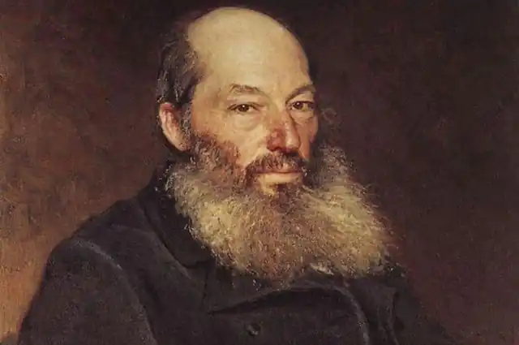
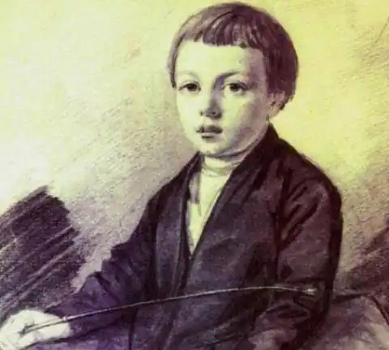
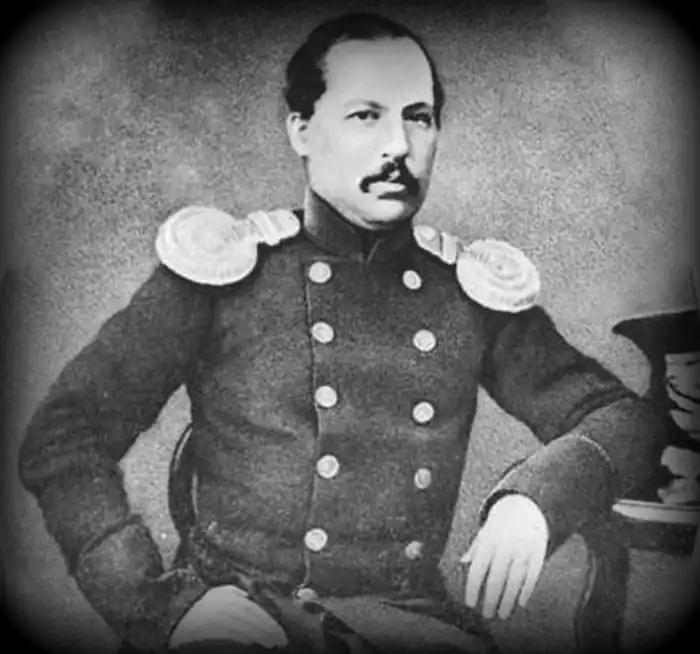

ФЕТ, Афанасій Афанасійович (Фет, Афанасий Афанасьевич; автонім: Шеншин, Афанасій Афанасійович — 29.10.1820, с. Новосьолки побл. м. Мценська Орловської губернії — 03.12. 1892, Москва) — російський поет.
Фет походить із дворянської родини. Його батько, багатий і родовитий орловський поміщик Афанасій Шеншин, таємно привіз із Німеччини колишню дружину дармштадського чиновника Шарлотту. Офіційне одруження Шеншина з нею відбулося вже після народження сина Афанасія. Через багато років церква дізналася про позашлюбне народження хлопчика, і вже в 15-літньому віці його офіційно визнали не російським дворянином Шеншиним, а сином німецького чиновника Фета. Разом із прізвищем майбутній поет втратив не тільки дворянський титул і право на спадщину, а й національність. З 1834 р. Фет вчився у приватному навчальному пансіоні Крюмера у м. Верро, що неподалік теперішнього Тарту (Естонія). У 1837 р. за рішенням батька покинув пансіон і поїхав у Москву.
Упродовж 1838-1844 pp. навчався у Московському університеті, спочатку на юридичному, а згодом перевівся на факультет словесності. За час навчання познайомився з поетами А. Григорьєвим, Я. Полонським, С. Соловйовим, з якими його об'єднувала не лише міцна дружба, а й спільність естетичних поглядів. Після закінчення університету у 1845 р. Фет був прийнятий унтер-офіцером в кірасирський (кавалерійський) полк, розквартирований у Херсонській губернії. У1848 р. Фет познайомився з дочкою відставного полковника Марією Лазич. Молоді люди закохалися, але на заваді їхньому щастю стали матеріальні негаразди: батько Марії, збіднілий багатодітний поміщик не міг дати дочці посагу. Через декілька місяців Фет розірвав стосунки з Марією Лазич. Невдовзі вона загинула під час пожежі, при цьому знайомі дівчини і сам Фет схилялися до думки, що це було самогубство. Ця подія спричинила важку психологічну травму у душі поета. У 1853 р. Фет перейшов у гвардійський лейб-уланський полк, розквартирований неподалік Петербурга, завдяки чому зміг часто бувати у столиці, зустрічатися з провідними письменниками. У тому самому році він познайомився з І. Тургенєвим, а в 1855 р. — із Л. Толстим (впродовж 1858—1884 pp. Фет активно листувався з ним; зберігся 171 лист Толстого і 139 листів Фета) У 1856 р. Фет здійснив поїздку за кордон (Рим, Неаполь, Генуя, Париж), зустрічався у Парижі з Тургенєвим, познайомився з Поліною Віардо. Наступного року Фет одружився з М. Боткіною, донькою багатого торгівця чаєм, що суттєво поліпшило матеріальний стан Фета. У 1858 р. в чині полковника Фет вийшов у відставку з наміром оселитися у Москві. Зблизився з гуртком "Сучасник" ("Современник") — М. Некрасовим, Тургенєвим, Григоровичем й ін. Вірші поет деякий час публікував у "Сучаснику", але невдовзі через непорозуміння з колом його ідеологів Фет розірвав стосунки з журналом. У1860 р. Фет купив маєток у Мценському повіті і підпорядкував свою діяльність домашнім і господарським справам. У подальші роки Фет придбав ще два маєтки (1877 р. — в Курській губернії, с. Воробйовка; 1880 р. — у Москві). З 1867 до 1877 р. Фет працював мировим суддею. Останні роки життя поет присвятив інтенсивній літературній діяльності. Помер він від серцевого нападу, спричиненого невдалою спробою самогубства. В історію російської поезії Фет увійшов як один із найавторитетніших представників т. зв. "чистого мистецтва". Предтеча російських символістів, у своїй ліриці Фет відобразив почуття та переживання людини XIX ст., змалював чудові картини природи, створив вишукані зразки ліричної мініатюри, у яких вірш гранично наближений до музики. Перші поетичні спроби Фета припадають на кінець 30-х pp. У 1840 р. вийшла друком перша його збірка поезій "Ліричний пантеон" ("Лирический пантеон"). Більшість віршів книги мала наслідувальний характер, а в жанровому аспекті домінують романтична балада та твори, близькі за темою та манерою до античних. Уже тоді Фет став відомим у колі читачів та критиків. Упродовж 1841—1845 pp. він опублікував у журналах "Москвитянин" та "Вітчизняні записки" ("Отечественные записки") понад 85 віршів, серед яких тепер вже хрестоматійний "Я прийшов до тебе..." — вірш, що порушує тему кохання, якій акомпанує тема весняного відродження природи. На другу пол. 40-х pp. припадає спад творчої діяльності Фета. За цей час він написав лише близько двох десятків поезій і переклав тринадцять од Горація. Особливе місце в поетичному спадку Фета посідає цикл віршів, присвячений коханню до Марії Лазич. Образ дівчини в ореолі чистого почуття і мученицької смерті на довгі роки полонив творчу уяву Фета і до останніх днів його життя був джерелом натхненних рядків, сповнених каяття, ніжності і кохання. У цикл входять вірші, написані упродовж 36 років: "У довгі ночі..." (1851), "Незабутній образ" (1856), "В урочий день, коли душею прагну..." (1857), "Старі листи" (1859), "Не уникай; я не молю...", "Прости — і все забудь...", "Не дорікай, що я хвилююсь..." та ін. У 1850 р. з'явилася поетична збірка "Вірші А. Фета" ("Стихотворения А. Фета"), куди ввійшло 182 вірші. У збірці повною мірою відобразилася художня своєрідність поезії Фета, визначилося коло тем, мотивів, образів його лірики. Росія виступає у збірці як головний поетичний образ, що особливо виокремлюється на тлі класичних форм античної антології. Тоді ж був опублікований і один із найвідоміших віршів Фета, що став програмним для представників "чистої поезії" "Шепіт... Ніжний звук зітхання..." ("Шёпот, робкое дыханье..."). Сюжет твору — любовне побачення в саду, яке відбувається в таємничій атмосфері сутінків. Увесь вірш — це шерег називних речень за відсутності будь-якого дієслова. Увесь цей самобутній набір художніх засобів спрямований на те, щоби підкреслити "музику кохання": Шепіт... Ніжний звук зітхання...Солов'їний спів...Срібна гра і колиханняСонних ручаїв...Ночі блиск... Тремтіння тіней...Тіні без кінця...Ненастанні, дивні зміни Милого лиця...У хмаринках — пурпур рози.Відблиск янтаря...І цілунків пал, і сльози,І зоря, зоря!("Шепіт... Ніжний звук...", пер. М. Рильського)На 1856 р. припадає поява збірки віршів Фета, виданої за редакцією Тургенєва, що була високо поцінована критикою. Один із критиків навіть зауважив, що віршами Фета можна випробовувати, наскільки тонко у поціновувачів поезії розвинені естетичні смаки. Переважне коло поетичних тем Фета — зазвичай, те, що означують "вічними" темами: природа, краса, кохання, мистецтво. Прикметною ознакою поезії Фета є також пафос життєрадісності. Це основний настрій, що пронизує її. Фет був неперевершеним майстром пейзажу. Він чудово відтворював фарби і звуки, красу природи. У його ліриці присутні картини усіх пір року та доби: весна, літо, осінь, зима, ранок, вечір, полудень, ніч. Але найхарактерніші для нього — картини весни та ранку. Пейзаж у Фета здебільшого слугує вираженням щирості почуттів та емоційних станів поета. Фет детальніше і конкретніше змальовує природу, ніж це робили його попередники. Л. Толстой говорив, що вірші Фета про природу навчили його розуміти її. Інша важлива тема поезії Фета — кохання. Його інтимна лірика позбавлена відтінку трагічності. Кохання розкриває людині сенс життя і красу природи. Композиція віршів Фета має один центр — одну думку, один настрій. Вірш Фета фокусує усі враження, почуття, думки і цим підсилює зображення і вираження. Спосіб поетичного вираження у Фета характеризується стислістю, небагатослівністю, об'єктивованістю почуттів і переживань, що слугують основним предметом його віршів. Двотомна збірка віршів Фета 1863 p., підготовлена у видавництві К. Солдатенкова, була зустрінута читачами і критикою з прохолодою, що змусило поета надовго замовчати. Поновлення активної творчої діяльності Фета припало на початок 80-х pp. У цей час він перекладав працю А. Шопенгауера "Світ як воля і уявлення", яка значно вплинула і на світогляд самого Ф. Повернувшись до поетичної творчості, Фет видав 4 збірки віршів під спільною назвою "Вечірні вогні" ("Вечерние огни"; 1883, 1884, 1887, 1890). Перший випуск "Вечірніх вогнів" був поділений на розділи: "Елегії і думи", "Море", "Сніги", "Весна", "Мелодії", "Різні вірші", "Послання", "Переклади". У збірці низькій дійсності та життєвій боротьбі поет протиставляє не мистецтво, як у ранній творчості, а розум, пізнання. Саме вони, на думку Фета, здатні вивищити людину над натовпом, дати їй внутрішню свободу. Цілий ряд віршів збірки присвячений М. Лазич. Збірка Фета, за словами одного з критиків, стала вранішньою зорею творчості О. Блока, який назвав поета "великим учителем" і зауважував, що описати його "означало б бажати вичерпати невичерпне". Того самого року Фет видав віршований переклад усіх творів Горація. Остання праця Фета — два томи мемуарів "Мої спогади" ("Мои воспоминания", 1890). Третій том, "Ранні роки мого життя" ("Ранние годы моей жизни"), був виданий посмертно — в 1893 році. Українською мовою поезію Фета перекладали М. Рильський, Г. Кочур, Р. Лубківський, С. Бурлаков та ін. В. Назарець